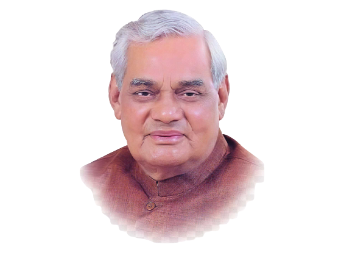

1924 - 2018
"One should firmly believe that all difficulties in life eventually come to an end. - Atal Bihari Vajpayee"
Atal Bihari Vajpayee was born on December 25, 1924, in Gwalior, Madhya Pradesh, India. He hailed from a middle-class Brahmin family. From a young age, Vajpayee displayed exceptional oratory skills and a keen interest in politics. He completed his schooling from Saraswati Shishu Mandir, Gwalior, and later pursued his higher education at Victoria College (now Laxmi Bai College) in Gwalior and DAV College in Kanpur.
Vajpayee's political journey began during his college days when he became associated with the Rashtriya Swayamsevak Sangh (RSS), a Hindu nationalist organization. He was deeply influenced by the ideologies of the RSS and its leaders, such as Shyama Prasad Mukherjee and Deendayal Upadhyaya. In 1951, Vajpayee co-founded the Bharatiya Jana Sangh, the political arm of the RSS, and soon emerged as one of its prominent leaders. He was elected as a Member of Parliament to the Lok Sabha for the first time in 1957 from Balrampur in Uttar Pradesh. Vajpayee's eloquence and moderate approach helped him gain respect and popularity, both within his party and among political opponents
Over the years, Atal Bihari Vajpayee's stature within the Jana Sangh grew steadily. He was known for his ability to forge alliances and maintain strong relationships across party lines. As a result, when the Janata Party was formed in 1977, he played a crucial role in its formation and became the External Affairs Minister in the Morarji Desai-led government.
In 1980, after the Janata Party's coalition collapsed, Vajpayee re-established the Bharatiya Janata Party (BJP) as its own separate political entity. Under his leadership, the BJP steadily gained prominence and emerged as a major force in Indian politics. In 1996, Atal Bihari Vajpayee was elected as the Prime Minister of India for the first time, but his government lasted only for 13 days. However, he did not give up, and in 1998, the BJP-led National Democratic Alliance (NDA) secured a significant victory in the general elections, and Vajpayee once again became the Prime Minister. During his second term as Prime Minister from 1998 to 1999, Vajpayee's government conducted a series of nuclear tests in Pokhran, establishing India as a nuclear power. His government also focused on economic reforms, infrastructure development, and improving India's international relations.
In 1999, India faced the Kargil conflict with Pakistan. Vajpayee's resolute leadership during this critical time earned him immense respect, both domestically and internationally. He displayed statesmanship by not crossing the Line of Control during the conflict, and once the conflict was resolved, he extended a hand of friendship towards Pakistan, advocating for peace and dialogue.
In 1999, the NDA, led by Vajpayee, emerged victorious once again in the general elections. Vajpayee became the Prime Minister for the third time and served a full term from 1999 to 2004. During this tenure, his government continued to focus on economic reforms and infrastructure development. His visionary project, the Golden Quadrilateral, aimed at connecting major cities through a network of highways, was initiated during this time.
In 2004, the NDA lost the general elections, and Vajpayee announced his retirement from active politics. However, he remained an influential and respected figure within the BJP and continued to be consulted on important matters
Atal Bihari Vajpayee was a statesman, poet, and visionary leader who left an indelible mark on Indian politics. His moderation, oratory skills, and dedication to peace and development made him a beloved leader across party lines. On August 16, 2018, Atal Bihari Vajpayee passed away at the age of 93, leaving the nation in mourning. He will always be remembered as one of India's most admired and respected leaders, and his legacy will continue to inspire generations to come.